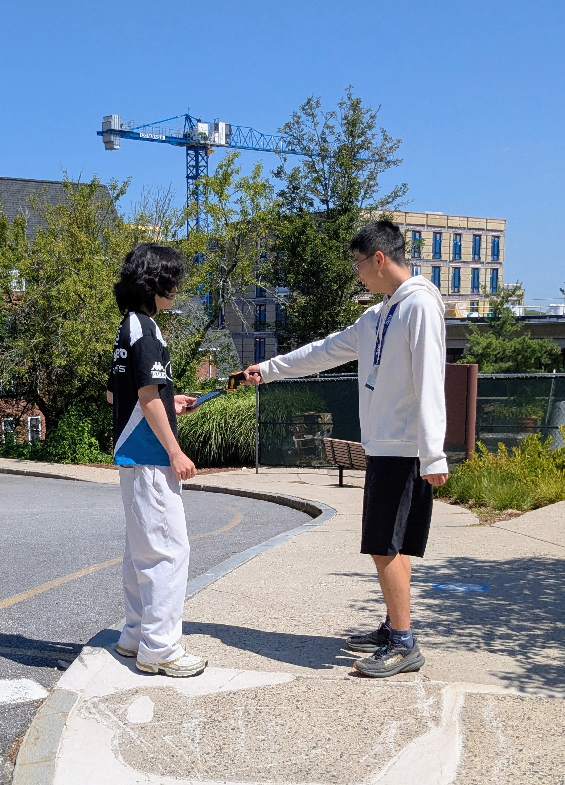
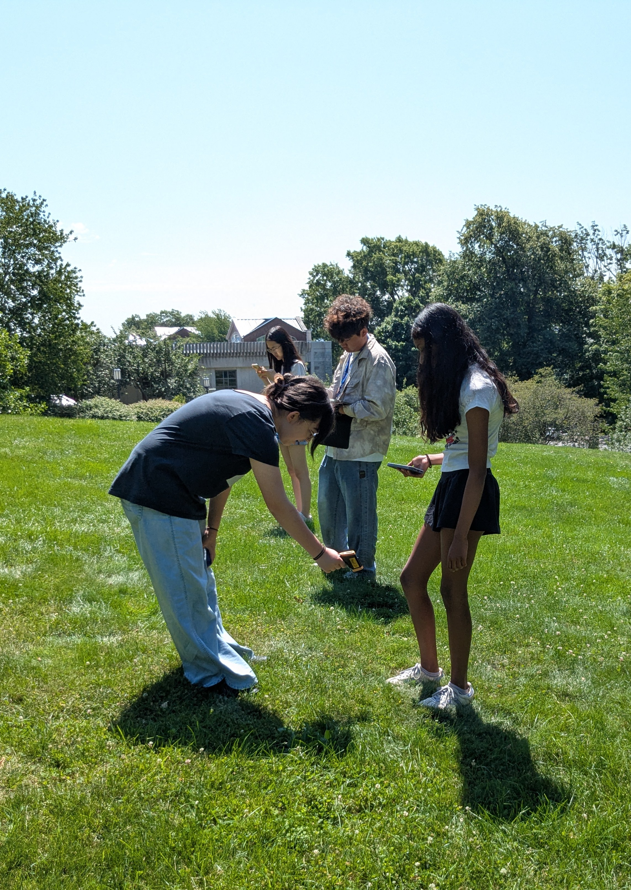
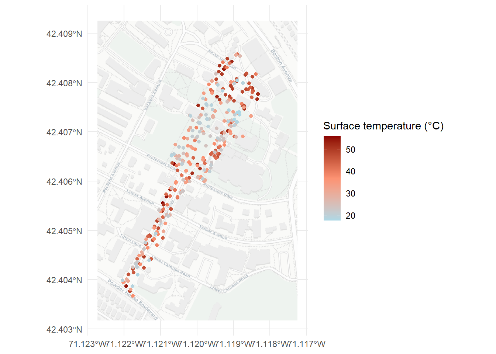
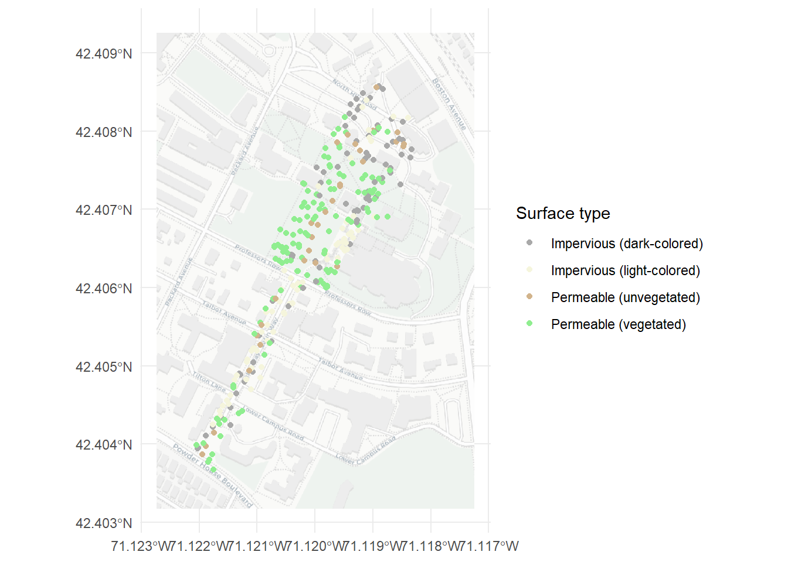
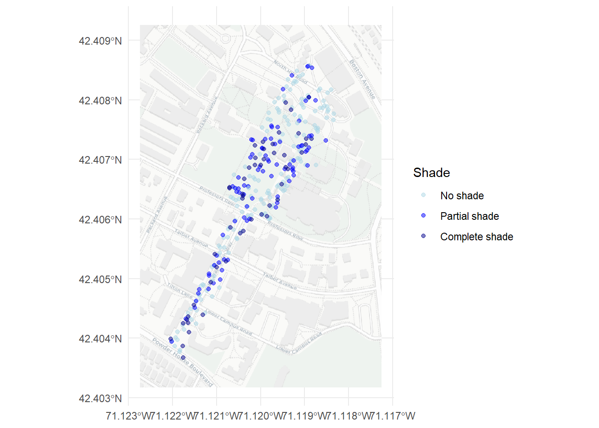
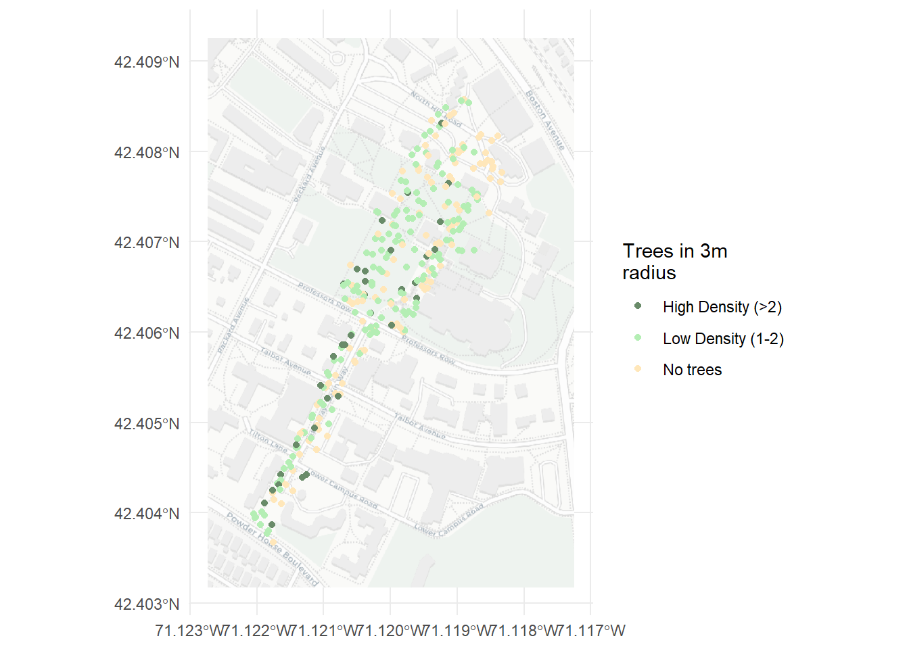
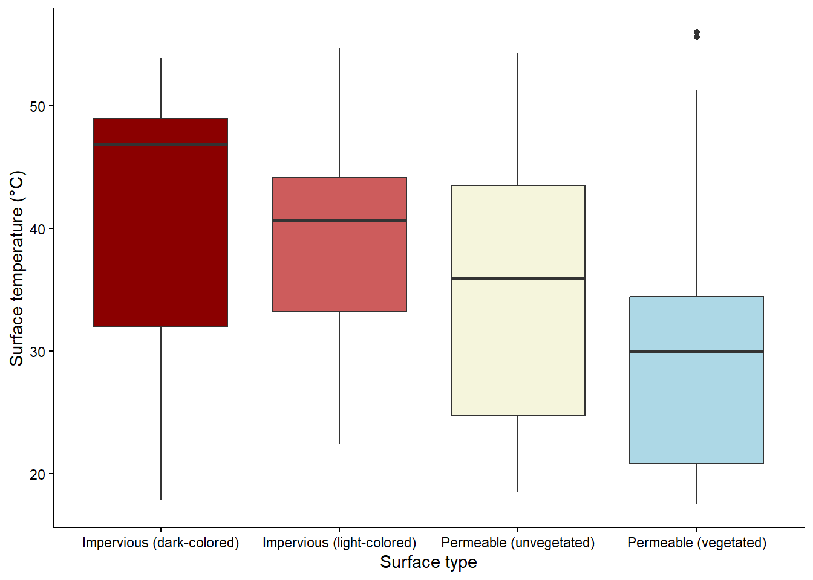
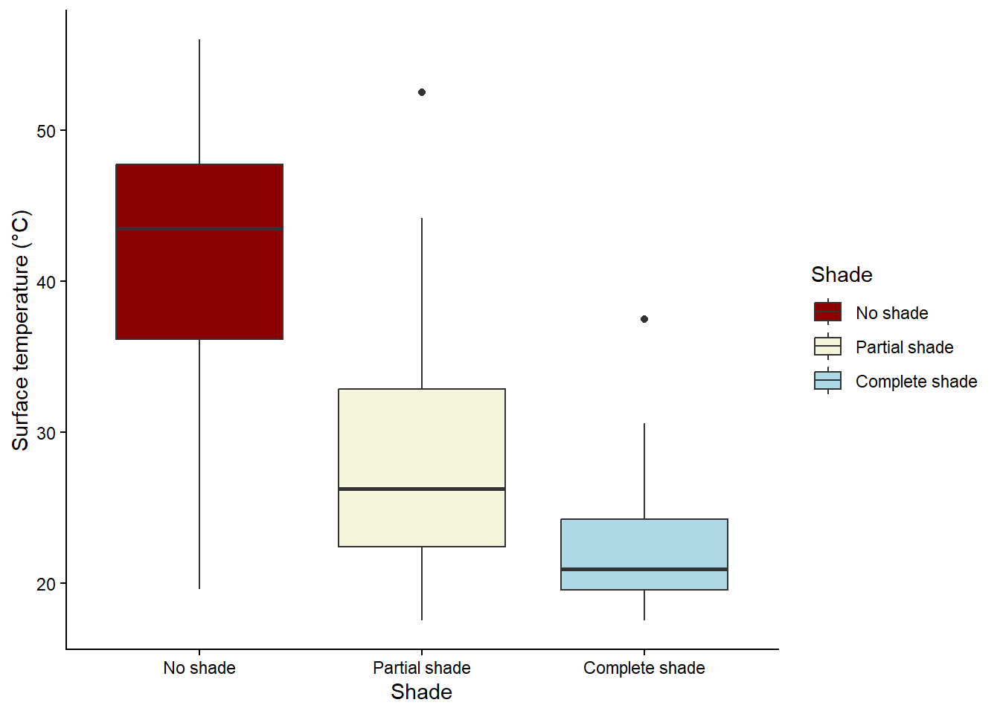
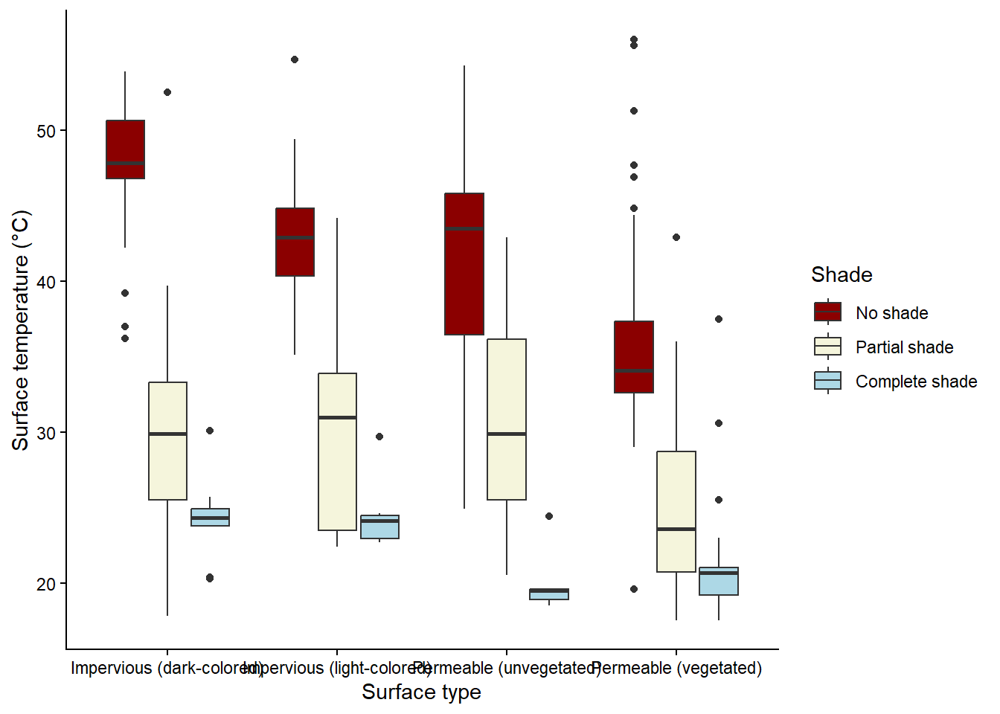
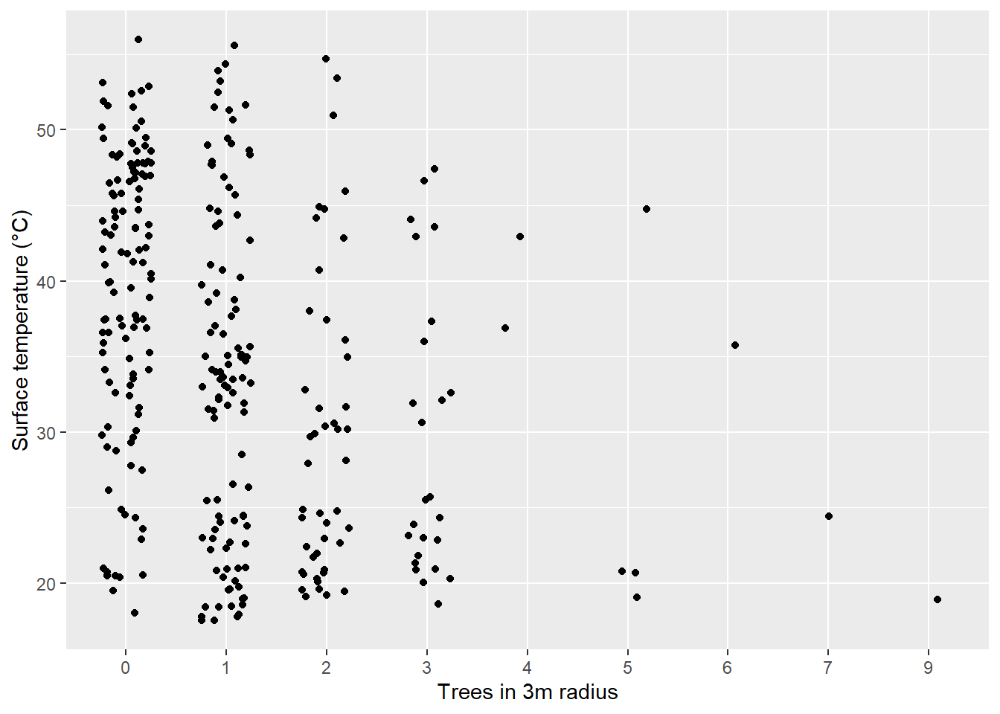

Evaluating Urban Heat @ Tufts
About the exercise
Students taking part in the Tufts Climate Resilience Institute summer program collected data on 27 July 2026 to evaluate relationships between surface temperatures, surface permeability, shade, and tree density on the Tufts Medford Campus.

Methods and materials
During the exercise, walked transects across the campus, stopping at intervals of 30 paces. At each observation point, the following data were recorded:
Surface temperature in degrees Celsius (taken using an infrared thermometer)
Surface type: impervious (dark/light) vs permeable (vegetated/unvegetated)
Shade level: complete, partial, or no shade
Tree density: number of trees in a 10 foot (3m) radius

Data collection
Data collection commenced at approximately 11AM EST in full sun conditions. students were positioned facing north or south at points along Professors’ Row, either side of Latin Way. The observations listed above, along with time and location, were collected using the ESRI Survey123 mobile application. The original data can be found, explored, and downloaded here.
A total of 306 observations were made during the exercise:
Mapping the data
The following maps show the spatial distribution of values for surface temperature, surface type, shade, and tree density.
Surface temperature

Surface type

Shade

Tree density

Data visualizations
Temperatures by surface type
Impervious surfaces store heat more effectively than permeable surfaces, and may continue radiating heat long after sundown. The boxplot below shows temperature ranges for data recorded on campus from different surfaces.

Temperature by shade
Trees intercept solar radiation that contributes to surface heating. The boxplot below shows temperature ranges for data recorded on campus from different shade categories.

Temperature by surface type and shade
This graph combines the three variables above (surface temperature, type, and shade). While the trends above still hold true, it demonstrates a more complex interplay between these factors. The cooling influence of surface permeability, for example, appears more significant in unshaded areas. The variation in temperatures is generally greater in areas of partial shade across all permeability categories. Temperatures are lower and much less variable in areas of complete shade. A few notable outliers of high temperature were recorded among the vegetated surfaces.

Temperature by tree density
Finally, we can examine how temepratures vary with respect to local tree density (expressed as number of trees within a 10 ft/3 m radius). This demonstrates a trend of cooler surface temperatures with greater tree density, though there is substantial variability across these values.

Notes
This is a Quarto website, developed using Posit RStudio, Quarto, and the R Statistical Computing platform. To learn more about Quarto websites visit https://quarto.org/docs/websites. Code used to create maps and visualizations can be found in the Code tab.